Crush Hour: A GameJam Project
Crush Hour is a game about helping people who are looking for their subway crush. Working at a Crush Booth™ your job is to make a facial composite based on the description that is given to you. But dealing with vague descriptions, a crappy computer and a very slow printer are not your only challenges, because besides that your customers have little to no patience and everything gets even crazier during rush hour. On the bright side, at least you are helping people find love! Or you might as well be creating a bunch of stalkers... Luckily, worrying about that is not in your job description!
Global Game Jam 2021 (Remote)
Theme: Lost and Found
Crush Hour is a fast-paced, time and resource-managing game developed using Unity.
Here I will detail the process we used to create our game, from the brainstorming sessions to the game design and gameplay rhythm. Due to the remote aspect of the event, the Global Game Jam started on a Wednesday but we started the development on Friday night as before (since most of the team had full-time jobs).
Design Process
Discovery
Brainstorming and selecting promising ideas for our game.
• Listing Ideas
• Idea Selection
• Napkin Pitch
Define
Converging our findings into a strong game idea.
****• Game Pillars
• Basic System
• Visual References
• System Interface
Planning
Defining our loop to execute our idea in two days.
• Onboarding
• Game Loop
• Player Flow
After defining our game loop and the overall feel of the game, each team member started the Production, working on their tasks:
Code
Narrative
Illustration
UX/UI
And some other extra important areas such:
Playtest
Music
Sound FX
Extra Art
Discovery
After the reveal of the theme, we gathered together in Discord and started brainstorming. Time was limited since not everyone could dedicate themselves fully to the event.
Our goal was to have a clear core mechanic for our game by Friday so the developers could start coding as soon as possible.
Brainstorming
Method: Listing Ideas and Voting
Session time: 1 hour
Our first Brainstorming Session goal was to generate as many ideas as possible using the theme Lost and Found as the core. To help the process, we created a central question for the Brainstorming:
What comes to your mind when you think about Lost and Found?
And for 5 min, we wrote down everything that came to our minds using the tool Miro.
After writing everything down, we grouped them by similarity and then voted for the ideas we liked the most.
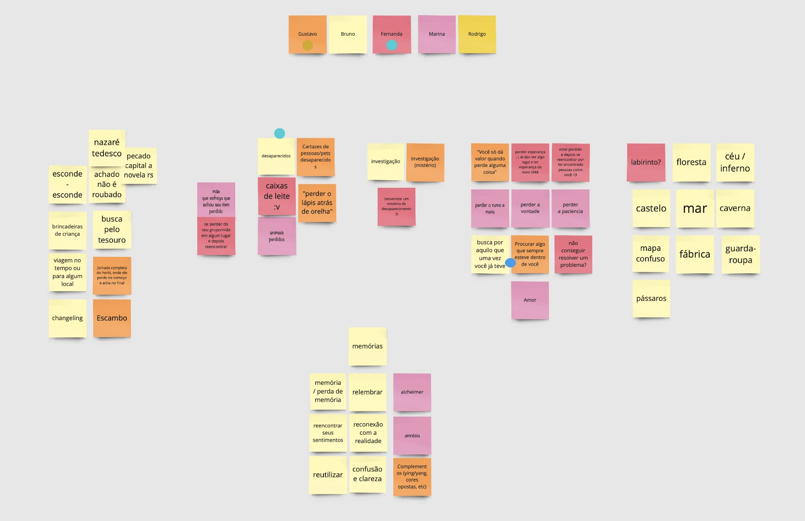
Then we separated the three most voted groups of ideas and started another voting session, now focusing on the most promising concept from each one.
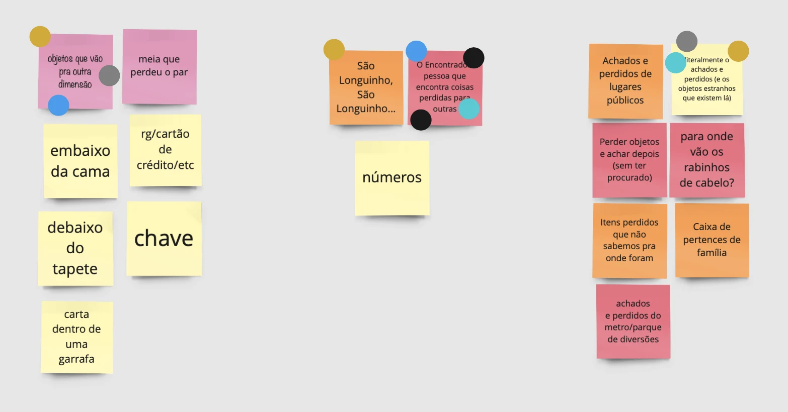
As a result, we ended up with three possible paths to start building our game:
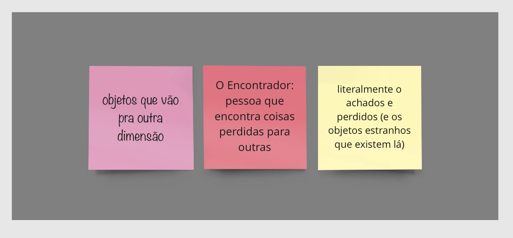
1️⃣ Objects that go missing because they go to other dimensions
2️⃣ The Finder: a person who finds lost objects for people
3️⃣ The Lost and Found and the weird objects that exist there
Napkin Pitch
The Napkin Pitch is a simple and easy method to convey a new idea, covering the most critical components associated with it. For our game, the main components we used were:
1️⃣ Idea's description
Describe in a few words: What is the main goal of the game? Is the game a combination of the other two games?
Example: "Pokemon meets overcooked in an intense fast-paced action RPG"
2️⃣ Player's motivation
What do you want the player to experience and feel? Why would they like to play the game?
3️⃣ The masterpiece
What does the game look like? What are your game references? Are there any images that convey the idea or sensations in the game? Do you have any mockup or wireframe of the idea? Just paste them here!
4️⃣ Risks and challenges
What are the drawbacks of the idea? Is there something we don't know and need to learn? Is the theme already overused?
With the "Lost & Found" theme as our focus point, our objective was to define the basic rules of the game, know where we were gathering references and inspiration, and have a clear path to follow.
We were able to flesh out 6 ideas. After detailing them, we did a round of voting (with three votes each) and had a winner: The idea #6
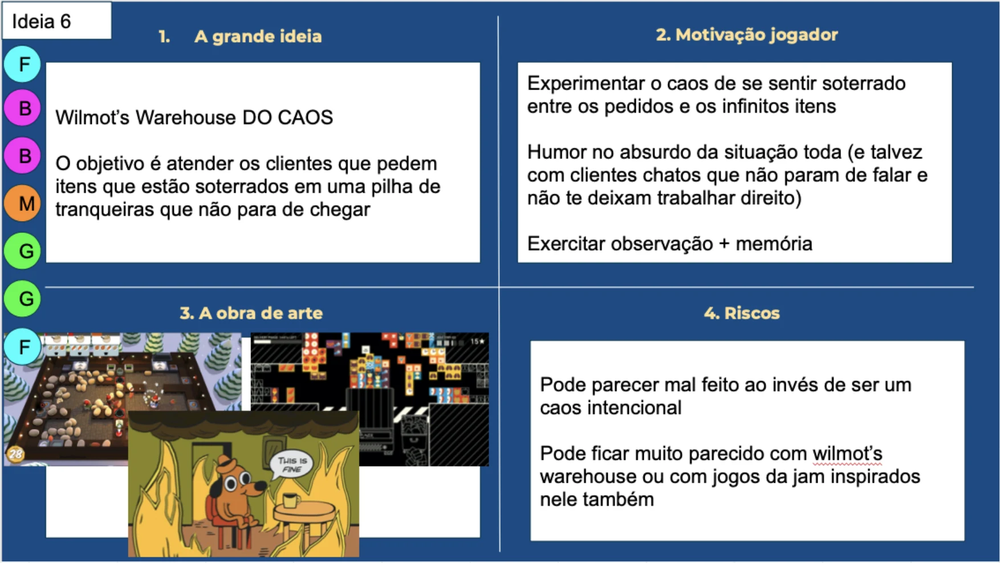
Brainstorming Round 2
We realized that we had a strong core game but we didn't have any idea what our game would look like. So we started a new Brainstorming Round, focusing only on:
What can be our game's theme? Where can it be set?
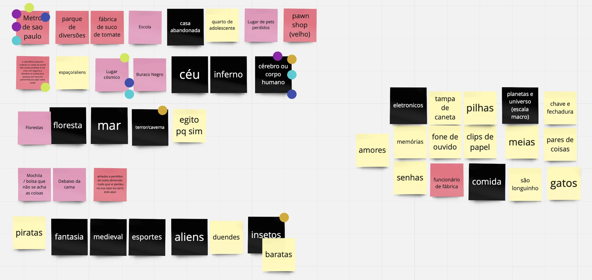
Like the previous round, we listed ideas, grouped them, and finally voted for the most promising ones.
Since we were running out of time, we decided to go with the most voted idea:
The game will be set at the São Paulo Metro Station.
Define
Game Design Pillars
This method helps the team to fix concepts and ideas about the game, grounding the global game design from the start. It helps the team to make accurate decisions, produce a cohesive design, and avoid falls.
In our design, we found pictures and addressed the YES / NOs for the following pillars:
Chaos / Overwhelm
Rhythm / Pressure
Metro
Storytelling / Emotion
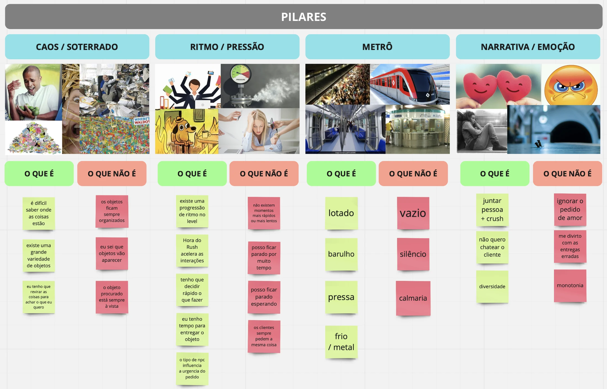
This step allowed us to come up with the basic narrative of the game:
You work at the Crush Booth, a service offered by the Metro to help their passengers find their lost crush. You'll receive descriptions of the crush and assemble them to deliver a picture of the lost crush to the passenger.
Basic Mechanics
After defining our pillars and basic narrative, we translated our game idea into the minimum possible mechanic loop, understanding how many areas we needed to work on. In our case there were three:
- Narrative - to understand the Player's goals and NPCs’ motivation
- Organization - what information the Player will receive and work with
- Match - the main goal of the game
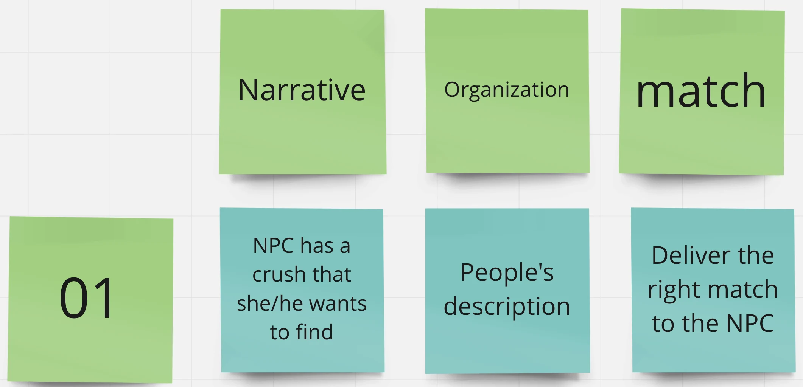
Our basic game loop is:
1️⃣ NPC has a crush and needs to find it and describes the Physical appearance of the crush to the Player
2️⃣ The Player assembles the composite sketch and delivers the print of the sketch to the NPC
3️⃣ The NPC reacts positively or negatively to the sketch
Here we decided that the People's Description Mechanic would be based in 8 categories:
Hair
Eyebrows
Beard
Shape
Nose
Eyes
Mouth
Detail
The categories of Hair, Beard, Eyes, and Face have up to five Color variations.
All categories have four to five Style variations of each.
This way we were able to have more than 1000 combinations of faces!
Visual References
We also spent some time searching for visual references that could guide us when making the User Interface and Character Design.
User interface and mood:
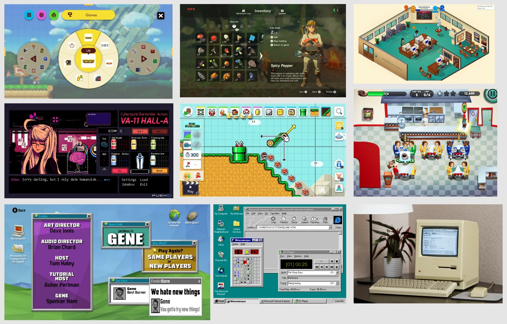
Modular characters:
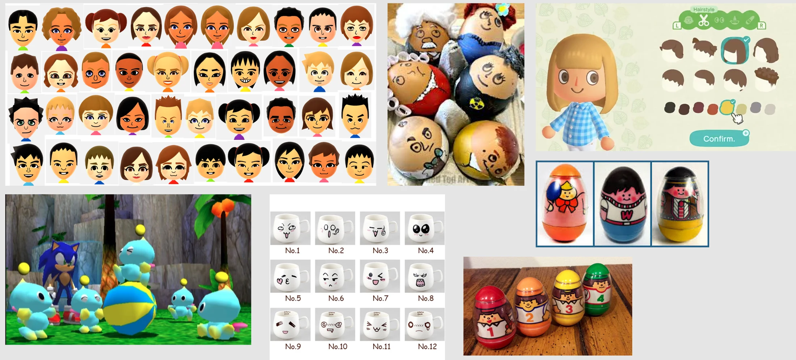
System Interface Wireframes
Our next step was to brainstorm some possible ways to show the game commands and information to our Players.
We imagined two possible approaches:
- Breaking the 4th wall, the Player is working for Crush Booth and it's behind a desk, looking at a line of customers and her computer, where she can assemble the NPC's description request. Under the desk is possible to select words and phrases to talk to the NPCs if needed (e.g. asking for more information).
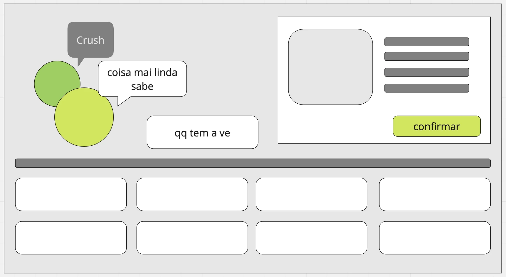
- The Player controls a character that works for Crush Booth. On the Left, you see the character's workstation, the metro environment, and people gathering around the desk. The Player can select the NPC to interact with and other items such as the Computer and the Printer. On the Right, you have an interactive area where the Player sees the selected element on the Left which can be an NPC, the Computer screen, or the Printer.
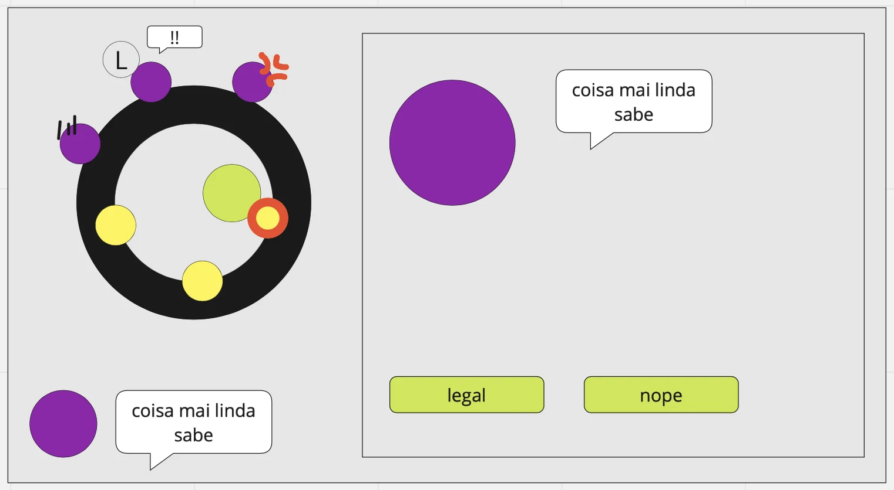
We decided to go with the second option because it felt more interesting to show the booth in the metro station, with more space to work with the background and other illustration assets.
Since we were short on time, at this point our artist started to work on the NPCs assets and facial modules.
Planning Prototype
After Discovering and Defining, it was time to plan the full loop of our game.
We started by first creating a detailed Player Flow, mapping the player's actions and the feedback she would receive from the game.
With the Player Flow, we were able to define:
- What kind of interface we were going to show
- Rhythm of the game
- Win and Lose conditions
- Point calculation
- Key moments for sound and visual feedback
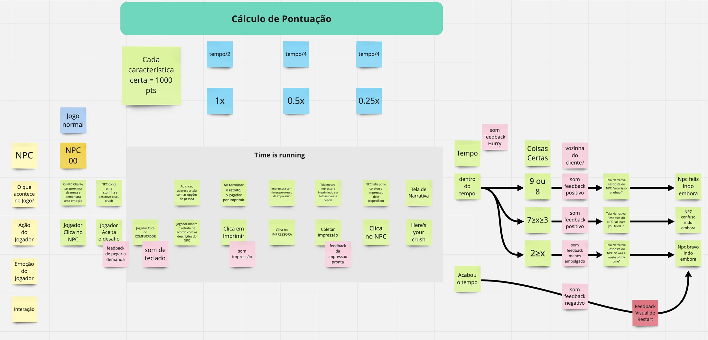
And one last flow to improve our game feel was the Rhythm Flow.
Here we sorted what happens in each minute of the game by stating how many NPCs appear over time and when the rush hour would take place.
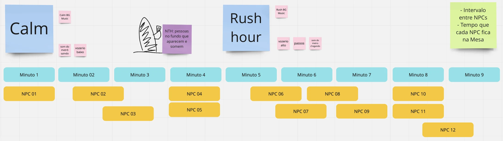
The variables we found were:
- Time which the NPC would wait at the booth for the photo
- Time between the NPCs showing up
- Time when the Rush Hour would start
After the first part of the prototype was done, we play-tested to tune better the pacing of the Rhythm Flow.
Production
Art
NPCs illustration and animation:
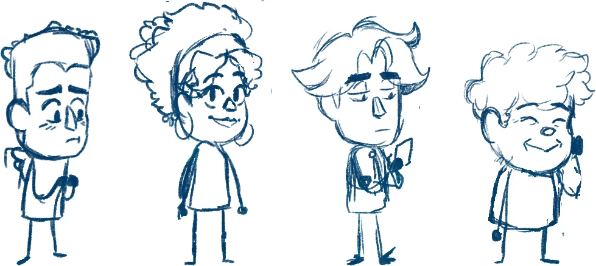
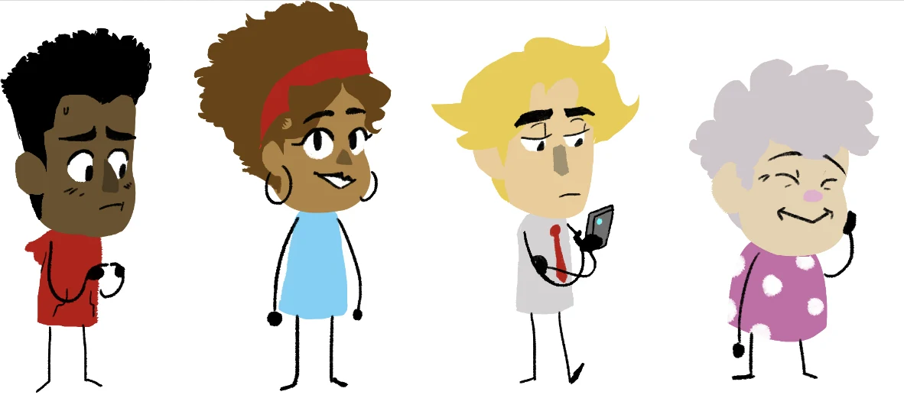
Some Facial assets:
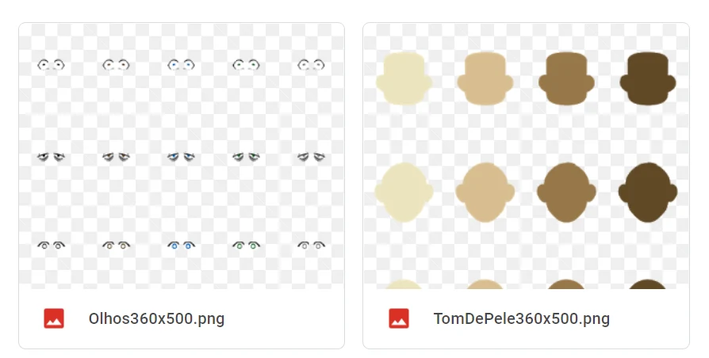
Narrative
The screenwriter focused on the narrative mechanics and logic, finding a way that could be easily implemented in the game:
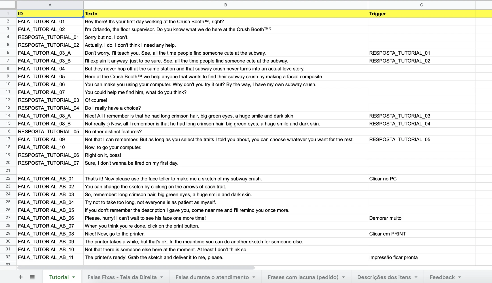
Besides that challenge, we faced the problem of how to name skin tones, as humans we are diverse and some words could sound wrong or disrespectful.
After some brainstorming we found our way around and decided to go with:
"is a bit pale / is light-skinned / is olive-skinned / is dark-skinned"
UXUI
Early studies
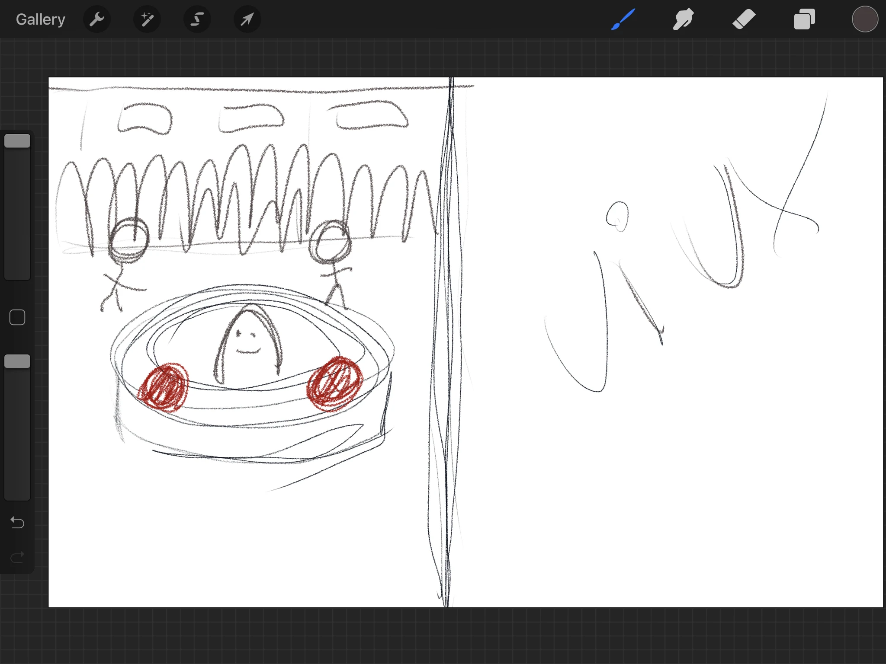
Improvements:
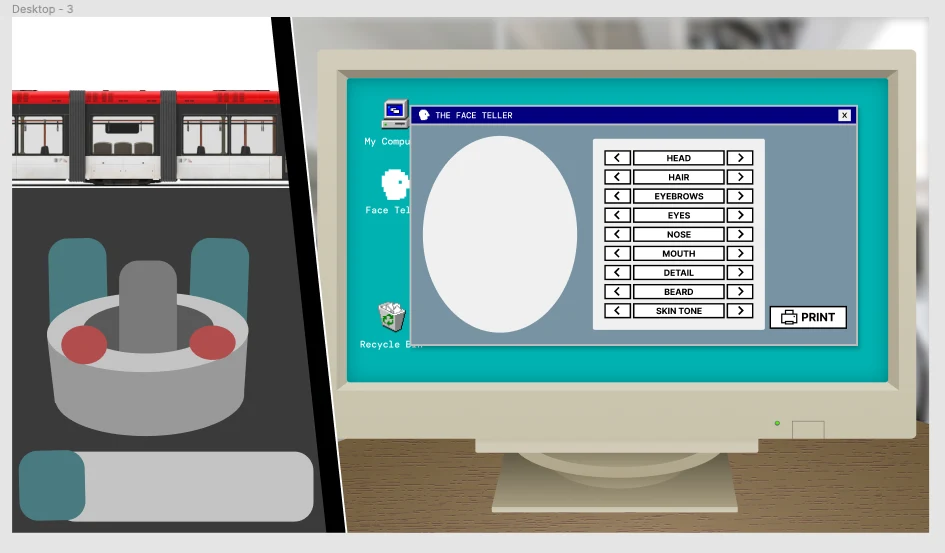
Final:
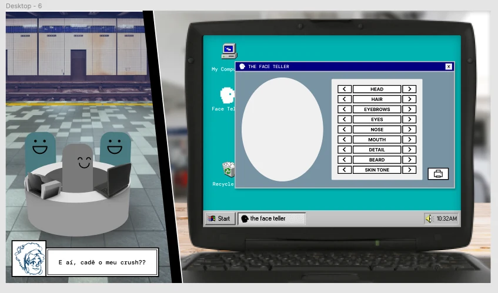
Coding
Using Unity, the developers were constantly sharing their progress and getting input on their work.
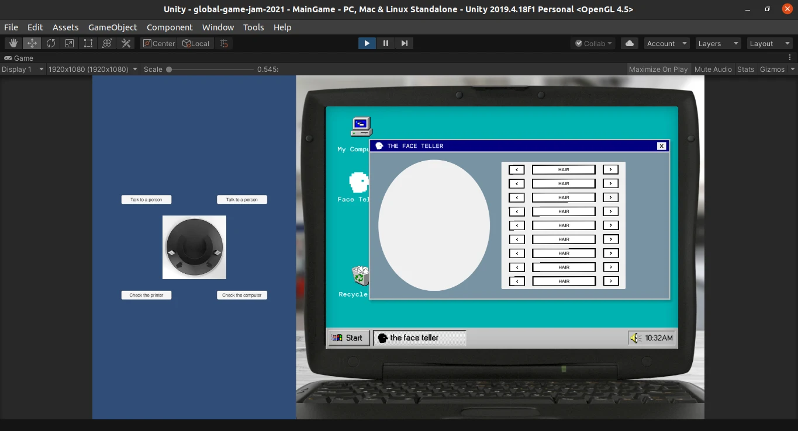
SFX and Music
A friend outside of the group composed the Main Music for our game, making a variation for our three key moments:
Intro and Tutorial
Calm time
Rush Hour!
The SFX we found online at https://opengameart.org and https://freesound.org/
Logo
I searched for seven different fonts so the team could be part of the choice of our game's logo style:
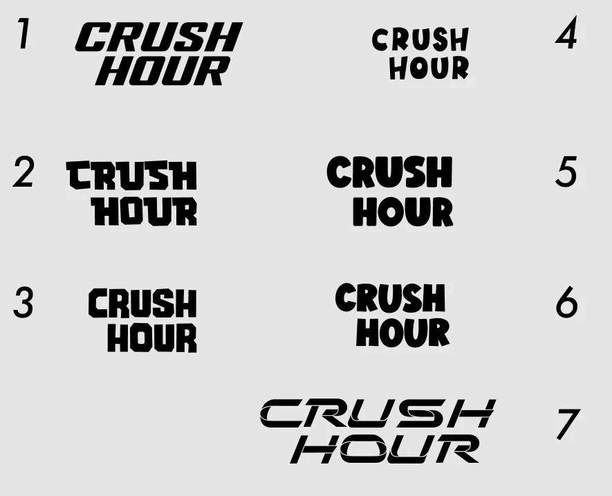
We decided to go with option 1 which gave us the feeling of movement and rush.
From that choice, I proposed two different designs:
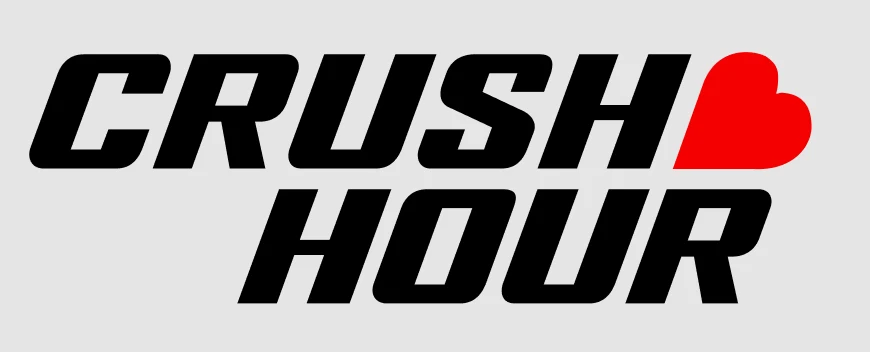
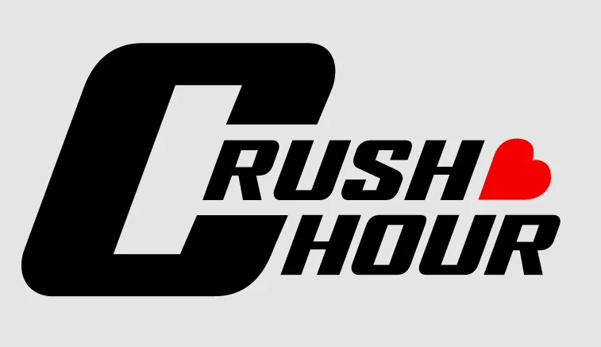
The second design was an attempt to bring the "pun intended" to our game, mixing Crush and Rush, so we agreed to go in that direction.
To give it more personality, I added some lines in the big C to bring even more movement, and a heart to translate the crush part.
Our final design:
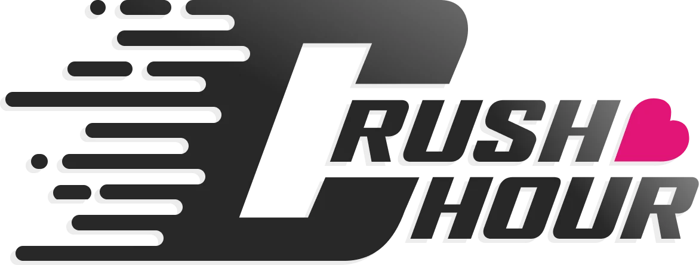
Credits
GGJ Official Team
Bruno Luvizotto
Fernanda Nunes
Gustavo Andrade
Marina Pasetchny
Rodrigo Caitano
Special Thanks
Nil Simsek - Music and Sound Design
Pedro Camara - Game Design
Sampa Diversa - GGJ Organization